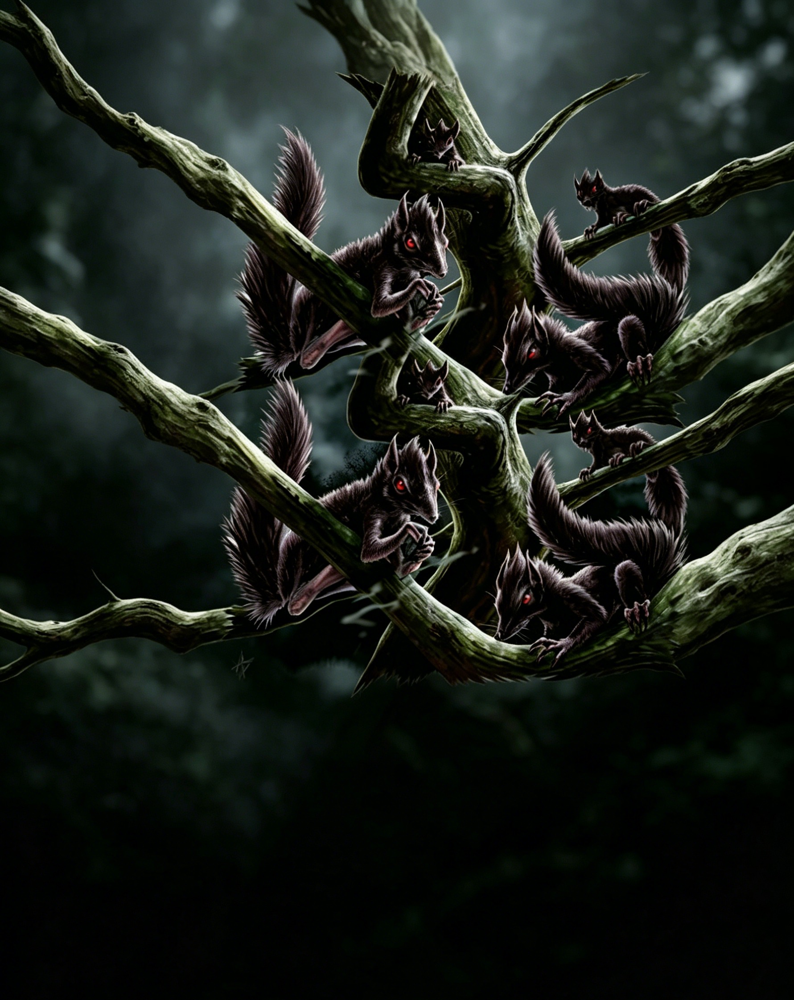

小型魔法兽（跨位面） | 挑战级数 1/2一阵嘶嘶声和咯咯声在昏暗的树林中回荡。你的眼角余光瞥见一个小巧的黑影在树枝间迅速掠过。
影栗鼠 ―― 总是混乱邪恶。
| 生命骰 | 1/2 d8（2HP） |
| 先攻 | +3 |
| 速度 | 30 英尺 (6格)，攀爬 20 英尺 |
| 防御等级 | 15，接触 15，措手不及 12（+2体型，+3敏捷） |
| 基本攻击/擒抱 | +1 / -11 |
| 近战攻击 | 啮咬 +6 (1d3�C4) |
| 占据/触及 | 2.5 英尺 / 0 英尺 |
| 特殊动作 | 黑暗寒气 3/天 |
| 特殊能力 | 黑暗视觉 60 英尺、昏暗视觉；影跃 |
| 豁免 | 强韧 +2，反射 +5，意志 +1 |
| 属性 | 力量 3，敏捷 17，体质 10，智力 2，感知 12，魅力 12 |
| 技能 | 平衡 +11，攀爬 +11，躲藏 +19，聆听 +3，潜行 +11，侦查 +7 |
| 专长 | 警觉，武器娴熟 (B) |
| 语言 | 无 |
| 进化 | 无 |
影跃 (Su)：类似于任意门 (Dimension Door)；每日 3 次；施法等级 1。魔法传送必须在有阴影的区域开始和结束。影栗鼠每天可以通过这种方式移动最多 30 英尺；这可以是单次跳跃，也可以是多个跳跃，总距离达到 30 英尺。每次跳跃，即使距离很短，也算作 10 英尺的一次递增。
黑暗寒气 (Su)：类似于黑暗术 (Darkness)；每日 3 次；施法等级 3。效果范围内的生物会受到 1d6 点伤害，同时受到 1 点力量伤害，除非通过 DC 13 的强韧豁免。豁免 DC 基于魅力并包含 +2 种族加值。只要生物停留在范围内，就不会再受到额外伤害，但如果离开并重新进入，则会再次受到伤害。
效果结束时，如果范围内的生物受到过伤害，阴影会凝聚成一个小结晶，大约核桃大小，为影栗鼠提供养分。此能力对不死生物或影界生物无效。此能力产生的阴影足够让影栗鼠使用其影跃能力。
技能：影栗鼠在平衡、攀爬、躲藏和潜行检定中获得 +8 种族加值。影栗鼠在攀爬检定中始终可以选择取 10，即使在仓促或威胁情况下也是如此。影栗鼠在攀爬检定中使用敏捷修正而非力量修正。
影栗鼠是一种起源于阴影界的松鼠形态生物，外形令人熟悉却充满邪恶气息。
生态：影栗鼠原产于影界 (Plane of Shadow)，以生命能量为食。与直接攻击受害者的影怪不同，影栗鼠通过黑暗寒气覆盖区域，从进入其范围的生物中吸取生命力。吸收的生命能量凝聚成小块阴影"结晶"，影栗鼠会将这些结晶存储在巢穴中供日后食用。这种习性使影栗鼠成为其他影界生物垂涎的猎物，因为这些凝聚的生命能量极具吸引力。幽影獒犬 (Shadow Mastiffs) 和暮兽 (Dusk Beasts，见《位面手册》第 169 页) 是它们的常见捕食者，同时施法者也会寻找这些凝聚的阴影用于死灵魔法。
影栗鼠形成大型群落，共享能力以收集大量生命能量。它们经常栖息在暗影榕树 (Umbral Banyans) 附近，与树木协作迅速杀死猎物，然后在猎物死前吸取其生命力。这种关系是互利的。
普通影栗鼠的寿命为 2 到 3 年，最长可达 5 年。它们在 6 个月大时成熟，雌性影栗鼠一年内可以根据食物供应多次产仔。成年影栗鼠用生命能量喂养幼崽，它们会啃咬凝聚的阴影结晶以提取养分，然后通过口对口的方式喂养幼崽。一颗结晶可以供养一窝 6 到 8 只幼崽一天的时间。
环境：影栗鼠原产于影界，但经常因与其他生物共处而进入其他位面。当暗影榕树转移到物质位面的幽暗森林时，影栗鼠有时会被意外遗留。尽管环境变化对它们有所扰动，但只要它们留在森林的黑暗核心区域，通常都能繁衍生存。影栗鼠偶尔也会与苦涩的影精 (Shadar-kai) 共存。
典型身体特征：影栗鼠体长约 14 英寸 (不包括尾巴)，外形像一只瘦削而巨大的松鼠，但它的眼中闪烁着邪恶的红光。其身体为深灰色或黑色，与阴影融为一体，极难侦查。
阵营：影栗鼠只关心捕食，对影界以外的大多数生命形式都充满敌意。它们对其他生物的完全无视使其成为绝对邪恶 (Neutral Evil) 的生物。
影栗鼠以群居形式行动，依靠其天生的敏捷与潜行能力。一个影栗鼠群体会利用黑暗寒气尽可能覆盖大范围，为整个群体提供食物。然而，这种合作基于本能，而非精心策划的战术。
影栗鼠通常避免使用其微弱的啮咬，仅在被迫进入近战时作为最后手段。如果黑暗寒气攻击效果不佳，它们会迅速消失在阴影中。
影栗鼠经常与其他阴影生物一起出现。它们的黑暗寒气能力强化了其他阴影生物的狩猎方式，因为这些生物不会受到此能力的伤害。
"尽管笑吧，我以前也笑过，一次。" ―葛鲁萨克 (Gruthark)，愤世嫉俗的半兽人
影栗鼠可能与来自影界的生物为伴，或栖息在黑暗妖精的树林中。
群落 (EL 5�C10)：影栗鼠群落可包含数十只个体。只有在极端情况下 (如被捕获) 影栗鼠才会单独行动。
EL 9：一群 20 只影栗鼠生活在一片黑暗的森林中，该森林由影精 (Shadar-kai，见魔物集第 150 页) 占据。这些影精珍视影栗鼠凝聚的阴影结晶，并经常将其他生物驱赶至森林，维持高产量。
暗影榕树巢穴 (EL 10�C12)：影栗鼠经常生活在或靠近暗影榕树 umbral banyans (见位面手册第 171 页)，这些榕树提供了保护和稳定的猎物来源。
EL 12：一棵暗影榕树庇护着 34 只影栗鼠。它们会等待暗影榕树捕获生物，然后用黑暗寒气覆盖区域发动攻击。
影栗鼠本身不收集财宝，但它们储存的生命能量结晶受到许多生物的珍视。尤其是死灵法师，他们愿意为这些阴影结晶支付高价。一块凝聚的阴影结晶价值 1,000 金币。
影栗鼠共享巢穴，因此想要获取它们的财宝通常需要击败大量影栗鼠及巢穴中可能存在的其他生物。影栗鼠的巢穴通常包含每四只成年影栗鼠一块阴影结晶，代表群落为食物匮乏时期及喂养幼崽储备的额外存粮。
供玩家角色使用：储存的生命能量结晶可作为死灵法术的可选材料成分。使用它有 50% 的几率将法术的施法者等级提升 2 级。
在艾伯伦：影栗鼠通常出现在玛伯尔显能区 (Mabar Manifest Zones) 中。这些区域在影沼 (Shadow Marches) 最为常见，但希恩德瑞克 (Xen'drik) 的丛林中也可能隐藏着类似的致命树林。当玛伯尔 (Mabar) 与艾伯伦 (Eberron) 位面交汇时，世界上的黑暗之地会变得更加幽深危险。在此期间，阴影生物更容易穿越位面，而影栗鼠群落往往会出现在物质位面的森林中，尤其是埃鲁登原野 (Eldeen Reaches) 的妖精森林。
在费伦：与莎尔 (Shar)――暗影魔法女神――有神秘联系的生物，包括影魔网 (Shadow Weave) 的信徒、黑暗妖精和阴影生物，通常栖息于她的家园――影界 (Plane of Shadow)，并偏好费伦大陆上受莎尔影响强烈的地区。
例如，赛尔顿的暗殿 (Darkhouse of Saeldoon) (见《信仰与神�o》第 163 页) 是一个崇拜这位失落女士的邪教组织。为其树林中添加影栗鼠群落非常简单。或许该教派利用影栗鼠从囚徒身上提取生命能量。
角色可以通过 奥术知识 (Knowledge (Arcana)) 和 位面知识 (Knowledge (the Planes)) 了解更多关于影栗鼠的信息。成功的技能检定可以揭示以下内容，包括较低 DC 的信息：
奥术知识：
DC 10：影栗鼠是原产于影界的魔法兽。此结果揭示所有魔法兽特性及跨位面亚种。
DC 15：有时影栗鼠会进入物质位面。
DC 20：影栗鼠以浓缩的生命能量为食，这些能量从活物中吸取并储存起来。
DC 25：浓缩的生命能量作为死灵魔法的法术成分非常有价值。
位面知识：
DC 10：影栗鼠是原产于影界的魔法兽。此结果揭示所有魔法兽特性及异界生物亚种。
DC 15：影栗鼠以浓缩的生命能量为食，这些能量从活物中吸取并储存起来。
DC 20：影栗鼠通常栖息在生长有暗影榕树的树林中，与这些树合作吸取生物的生命力。